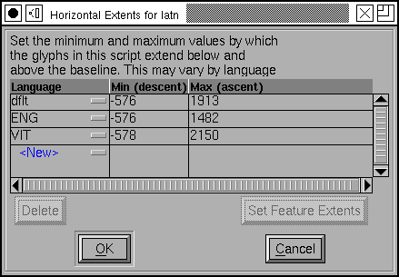
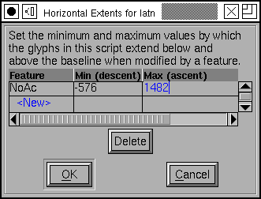

The baseline dialog, and the OpenType BASE table¶
This dialog may be invoked by
(or
Vertical Baselines). It allows you to control the baseline (in either
horizontal or vertical orientation) on which the glyphs of a particular script
line up. You may also control the spacing between baselines, and the interline
(or intercolumn) spacing on a per-script, or even per-language basis.
See the Baseline section in the overview for a description of why this is important.
There are currently seven standard baselines. The distinctions between them are described in the OpenType standard. (See the baseline tags section)
Basically most alphabetic scripts will use the ‘romn’ baseline, most CJK scripts will use the ‘ideo’graphic baseline. Tibetan and other Indic scripts will use the ‘hang’ing baseline, and math fonts might use the ‘math’ baseline.
Roughly the ideographic baseline will line up with the descenders of a Latin (Greek, Cyrillic) script, and the hanging baseline will line up with the ascenders.
You need to select which baselines your font will support. You may want to specify baselines that apply to scripts which aren’t in your font – this will mean your font is positioned reasonable when used with glyphs from other fonts. In the example above, the font has no Indic characters, but it still specifies a hanging baseline.
You select which baselines you will support by turning on the appropriate checkboxes. All scripts will have the same set of baselines. In every script one baseline will be the default baseline. Generally glyphs in that script will be drawn with their vertical origin (If you are working on horizontal baselines, that is) on that baseline. You then should specify how other baselines are offset from this one.
You may also set the minimum and maximum extent of the font for each script (by
pressing the [Set Extents] button). This corresponds roughly to a per-script
line spacing (or column spacing).
You may specify a default spacing for the script in general, and then more specific spacings for a given language.
In the example at left the default spacing for the Latin script allows room for one accent above capital letters. Now English doesn’t have any accents (usually), so it might make sense that English could use a tighter line spacing (and, traditionally this has been done). On the other hand Vietnamese stacks multiple accents above one another, so it needs more room than the default.
But suppose you are typesetting French. Now French sometimes is printed with capital accented letters, but sometimes a “À” will be drawn just as “A” with no accent. So you might create at feature that maps capital accented letters to their unaccented forms:
feature NoAc {
sub Agrave by A;
sub Aacute by A;
...
sub Egrave by E;
...
} NoAc;
Then it would be convenient to be change the baseline spacing if these feature were active. And, indeed you can. Simply select the line for French (in this case the default language works for French) and press the [Set Feature Extents] button.
It is possible to set Extent information even if you do not provide baseline data (that is, if all the baselines are unselected).